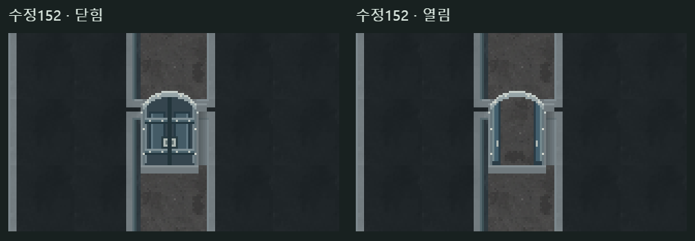
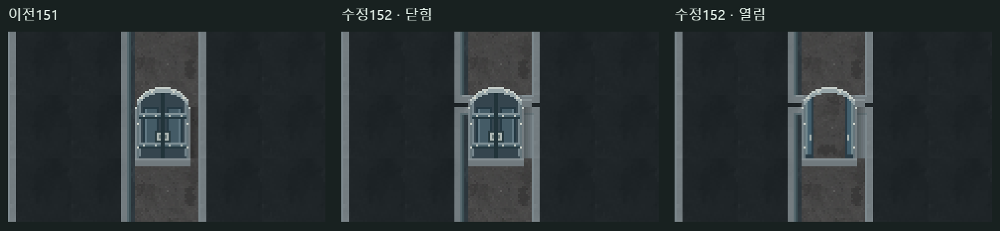

<!doctype html><html lang="ko"><meta charset="utf-8"><meta name="viewport" content="width=device-width,initial-scale=1"><title>152 · 양옆 벽과 문틀 연결</title><style>body{background:#17201f;color:#dfe9df;font:16px/1.6 system-ui;margin:0}main{max-width:1200px;margin:auto;padding:20px}h1{font-size:25px}a{color:#a3d5c5}img{width:100%;height:auto;image-rendering:pixelated}</style><main><h1>양옆 벽과 아치 문틀 연결</h1><p>문 모양은 그대로 두고, 벽 끝과 아치 바깥을 실제 옆 벽 도트로 이어 붙였습니다.</p><p><a href="./?seed=F1-mw8yvehm&door=horizontal">이 문에서 직접 이동</a> · <a href="../doorfit151/horizontal-review.html">이전151</a></p><details><summary>수정 전후 비교</summary></details></main></html>
